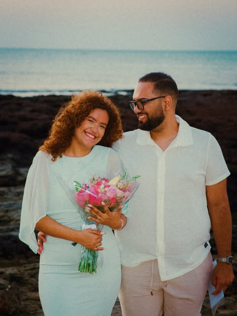
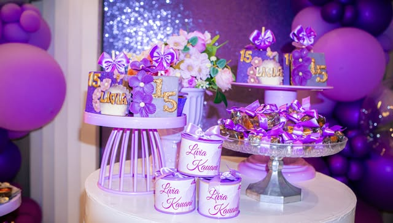
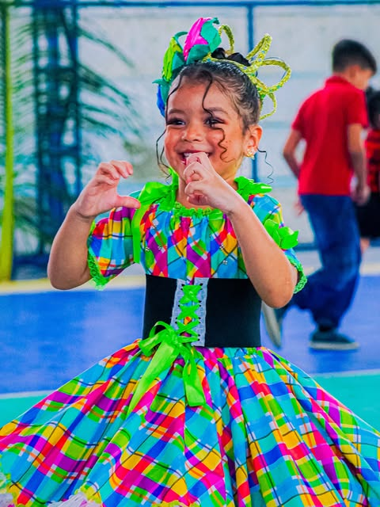
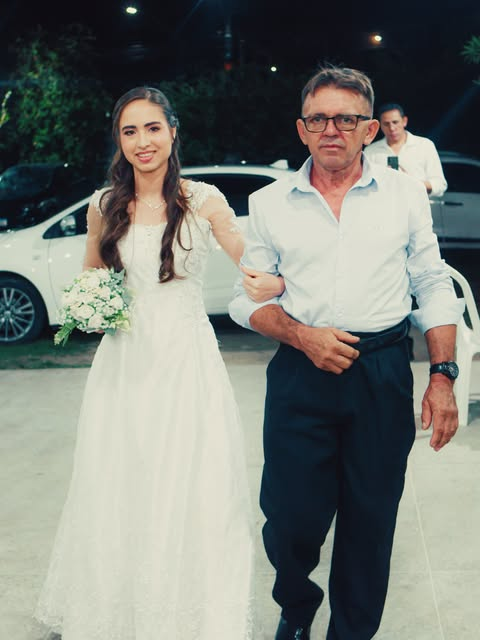
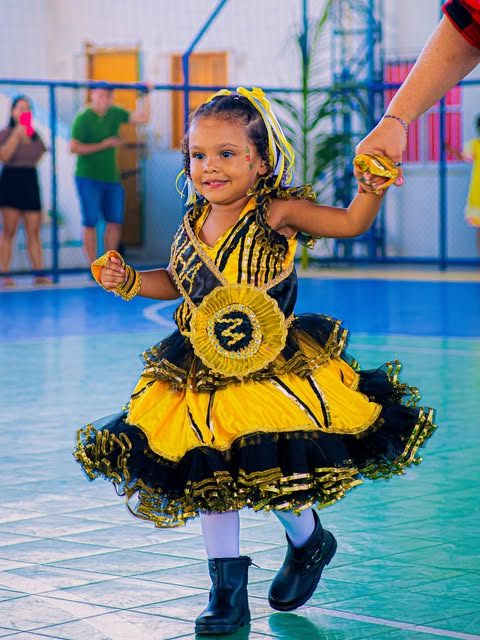
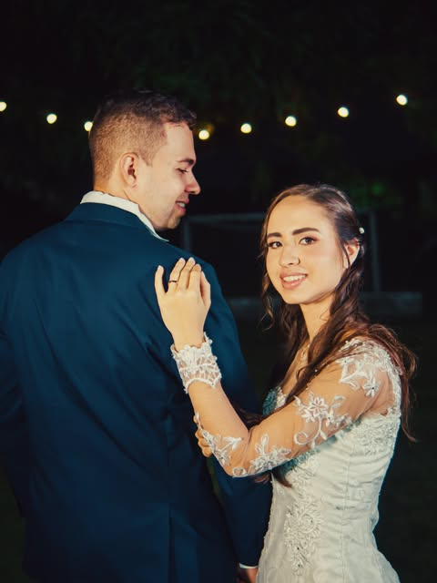
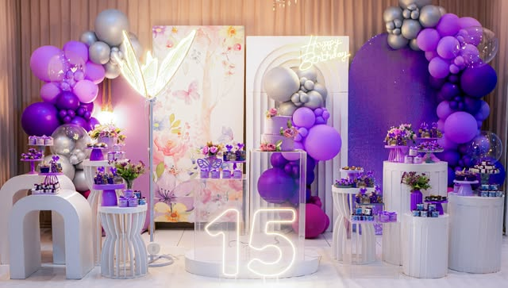

Fotografia com verdade · Maracanaú
Matheus Barros
Fotografia & filme.
Memórias que permanecem.
Fotografia e filme para quem quer guardar a sensação inteira: o abraço, a festa, o movimento e tudo o que acontece entre uma pose e outra.



Foto + filmeum olhar completo
06 frentesdo íntimo ao movimento
Maracanaúbase de atendimento
01 — O olhar
O instante passa.
A sensação, não.
Meu trabalho é perceber o que acontece entre uma pose e outra: o gesto espontâneo, a luz certa, o riso que ninguém combinou. É ali que mora a fotografia que continua viva.
Conheça o fotógrafo →02 — Projetos
Histórias em
capítulos.


Interlúdio visual
O instante
ganha ritmo.
Deslize para atravessar três atmosferas do olhar do Matheus: presença, promessa e movimento.
0103
03 — Especialidades
Do silêncio ao movimento.
Uma linguagem sensível, adaptada ao ritmo de cada história.

01
Casamentos
Cerimônia, retratos e tudo o que acontece sem aviso.

02
Aniversários
Da ambientação aos abraços: uma narrativa completa.
03
Ensaios
Direção leve para imagens naturais e cheias de identidade.
04
Eventos & apresentações
Tempo, movimento e emoção no ponto exato.
Outras frentes no perfil
Esportes, automotivo e filme também fazem parte do olhar do Matheus. Novos trabalhos entram aqui quando houver imagens públicas autorizadas.
Explorar Instagram ↗04 — Como funciona
Simples para você.
Inteiro na entrega.
Você conta o que imagina. Eu organizo o olhar, o ritmo e os detalhes para que você possa viver o momento sem se preocupar com o registro.
- 01
Conversa
Entendo a data, o lugar, o estilo e o que não pode faltar.
- 02
Planejamento
Alinhamos formato, cobertura e referências antes do dia.
- 03
Registro
Direção quando necessário, discrição quando o momento pede.
- 04
Entrega
Seleção e tratamento com cuidado para preservar a verdade de cada imagem.
MB / 01olhar autoral

Matheus
Barrosfotógrafo & filmmaker
Barrosfotógrafo & filmmaker
“O que acontece entre uma pose e outra também conta.”
Maracanaú · CEdesde a câmera
por trás
da câmera
05 — Sobre
Matheus Barros
Fotógrafo & filmmaker · Maracanaú, CE
Um olhar versátil para histórias que mudam de ritmo: do detalhe calmo de um ensaio à energia de uma apresentação; da chegada de um casamento à personalidade de um projeto automotivo.
A proposta é criar registros vivos, com cor, presença e espaço para as pessoas serem elas mesmas.
06 — Vamos conversar
Qual história
vamos contar?
Preencha o briefing rápido. A página prepara uma mensagem com os pontos essenciais para você enviar ao Matheus pelo Instagram.
Canal oficial
Instagram · @matheusfotografiasz ↗